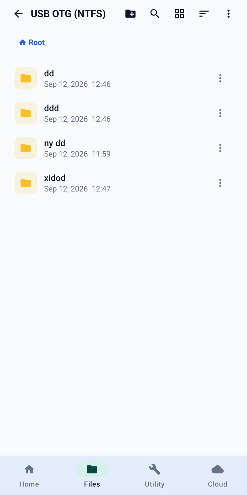

NTFS & exFAT USB OTG
Open a Windows drive. Copy, move, ZIP, format.
A native driver gives full read and write on NTFS USB sticks and hard disks — not a read-only viewer. The same explorer works on exFAT and FAT. Format a drive as NTFS or exFAT from the phone when you need to. No PC, no root.